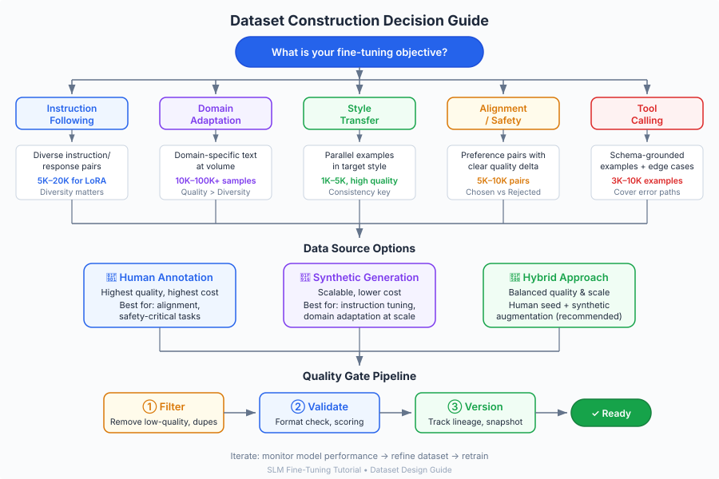

Objective → Data Requirements
Before you collect a single example, ask: "What do I want my model to do differently after training?" The answer dictates everything — format, volume, sources. Think of it like packing for a trip: you wouldn't throw snowshoes in your bag for a beach vacation. (Well, unless your vacation is "debugging CUDA errors," which is its own kind of winter.) 🧳
🎯 Instruction Following
You want the model to actually listen when you tell it to do something. Revolutionary concept, I know.
Data needed:
- Diverse instruction-response pairs
- Variety in task type (QA, summarization, coding, creative)
- Multiple phrasings for similar intents
🏥 Domain Adaptation
You want the model to speak your industry's language fluently — like teaching our friend SmolLM2-135M to pass as a radiologist at a dinner party.
Data needed:
- Large volume of domain text (papers, docs, logs)
- Continued pretraining format (raw text)
- Domain-specific QA pairs for validation
✍️ Style Transfer
You want the model to write in a specific voice or tone.
Data needed:
- Parallel examples: generic → styled rewrites
- High-quality exemplars of the target voice
- Negative examples of what to avoid
⚖️ Alignment (RLHF/DPO)
You want the model to prefer helpful, safe responses — basically teaching it manners. "Don't be chaotic evil" is the vibe here.
Data needed:
- Preference pairs: (chosen response, rejected response)
- Consistent annotation guidelines
- Coverage of edge cases and refusals
🔧 Tool-Calling / Function-Calling
You want the model to invoke APIs or tools with correct arguments — not just hallucinate a function that doesn't exist and call it with the confidence of a CEO reading a teleprompter.
Data needed:
- Schema-grounded examples (tool definitions + usage)
- Multi-turn conversations showing tool selection reasoning
- Error handling cases (wrong tool, missing params)
How Much Data Do You Need?
Ah, the eternal question. "How much data do I need?" is the ML equivalent of "how long until we get there?" — and the answer is equally annoying: it depends. But unlike a road trip with no GPS, I'm going to hand you an actual map. Here's a cheat sheet distilled from dozens of papers and painful trial runs. 🗺️
| Objective | Minimum Viable | Recommended | Diminishing Returns |
|---|---|---|---|
| Instruction Following | 500 examples | 5K–10K examples | >50K (diversity matters more) |
| Domain Adaptation | 10MB text | 100MB–1GB text | >10GB (quality plateaus) |
| Style Transfer | 200 examples | 1K–5K parallel pairs | >10K (overfitting risk) |
| Alignment (DPO) | 1K pairs | 5K–20K preference pairs | >50K (annotator noise dominates) |
| Tool-Calling | 300 examples | 2K–5K schema-grounded | >15K (schema coverage matters) |
⚠️ SLM-specific note: Small Language Models (< 3B params) are more data-hungry than their bigger siblings. They have less "world knowledge" baked in, so you may need to push toward the upper end of these ranges. Our friend SmolLM2-135M especially benefits from more examples — it's the scrappy intern who learns fast but needs to see more examples before the pattern clicks. Meanwhile, GPT-4 is watching from its penthouse with 1.8 trillion parameters, casually one-shotting tasks that SmolLM2 needs 5,000 examples for. Life isn't fair, but hey — at least SmolLM2 fits on your laptop.
Data Quality > Data Quantity
Here's the dirty secret of fine-tuning that took the community years to accept: 1,000 pristine examples beat 100,000 noisy ones. Every. Single. Time. I know — it sounds like something a data quality vendor would put on a billboard. But it's true, and the proof is embarrassingly robust.
🧪 The LIMA Principle
The famous LIMA: Less Is More for Alignment paper showed that just 1,000 carefully curated examples could match models trained on 50K+ noisy examples. Why? Because every bad example teaches your model a bad habit.
Think of it like learning guitar: 30 minutes of focused practice with a metronome beats 3 hours of noodling random riffs. Your model's "practice time" is limited by compute — make every rep count.
What makes data "high quality"?
Think of these as the "five love languages" of your dataset — nail all five and your model will absolutely adore you:
- ✓ Accurate: Responses are factually correct and complete
- ✓ Consistent: Format and style are uniform across examples
- ✓ Diverse: Covers the full distribution of inputs you expect at inference
- ✓ Decontaminated: No test-set leakage, no duplicates, no garbage
- ✗ Avoid: Auto-generated slop, conflicting labels, truncated responses — basically, anything that would make a human annotator sigh deeply and reach for coffee
📓 See it in action: The accompanying notebook demonstrates empirically what happens when you fine-tune on clean vs. noisy data with identical hyperparameters. Spoiler: the quality gap is brutal — like "did I accidentally shuffle the labels?" brutal.
The Dataset Construction Pipeline
Building a dataset isn't "download from Hugging Face and pray." (Though we've all been there. No judgment.) It's a structured engineering process with actual steps. Think of it as a water purification plant: raw, murky river water goes in one end; clean, won't-give-you-dysentery drinking water comes out the other. Your data needs the same treatment.

Dataset Construction Pipeline (SVG diagram)
Define Your Objective
What task? What format? What quality bar? Write this down before touching any data. A vague objective → a vague dataset → a vague model. Be ruthlessly specific: "Summarize legal contracts into 3-bullet executive briefs" beats "make it do summarization."
Choose Your Source
Options: existing datasets (Hugging Face Hub), synthetic generation (GPT-4/Claude as a teacher), manual annotation, or internal data. Each has trade-offs — it's the classic "fast, cheap, good: pick two" triangle. Synthetic data is cheap and fast but can introduce subtle "teacher fingerprints" (your model starts sounding suspiciously like GPT-4's younger sibling). Human annotation is gold-standard but expensive enough to make your finance team weep.
Collect & Generate
Gather raw examples. If using synthetic generation, define templates and seed examples. If scraping, respect licenses (seriously — lawyers are scarier than OOM errors). Pro tip: aim for 3-5× more raw data than your target. You will lose a lot during filtering — think of it like panning for gold. Most of what you scoop up is river mud.
Filter Aggressively
This is where the magic happens — and where most teams get timid. Remove duplicates (exact and near-duplicate via MinHash). Drop low-quality examples (too short, too long, low perplexity, garbled text). Apply domain-specific heuristics. Be ruthless. Channel your inner Marie Kondo: if an example does not spark joy (or learning signal), it does not make the cut. Most teams don't filter hard enough, and their models pay the price.
Validate & Review
Sample 5-10% and manually review. Yes, with your actual human eyeballs. Check for format consistency, label accuracy, and bias. Use inter-annotator agreement if multiple reviewers. I know manual review sounds tedious — and it is — but a single validation pass catches issues that would otherwise cost you days of wasted training. (The GPU said: [out of memory] is bad enough without discovering your data was garbage after paying the compute bill.)
Version & Document
Tag your dataset with a version (v1.0, v1.1…). Document: source, filters applied, size, known limitations. Future-you will send present-you a thank-you card. (Past-you who didn't document anything? We don't talk to that person.) Use dataset cards (Hugging Face format) or at minimum a README alongside your data files.
🚀 Try It Yourself
Alright, you've read the theory — now let's get your hands dirty. The companion notebook walks you through the entire pipeline from scratch: defining objectives, sourcing data, filtering the junk, and producing a versioned, ready-to-train dataset. By the end, you'll have built something real. No hand-waving. No "left as an exercise for the reader."
Open Notebook: Dataset Design & Data Prep →Works in Google Colab • No GPU required for this notebook • Your wallet is safe 💚